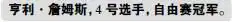
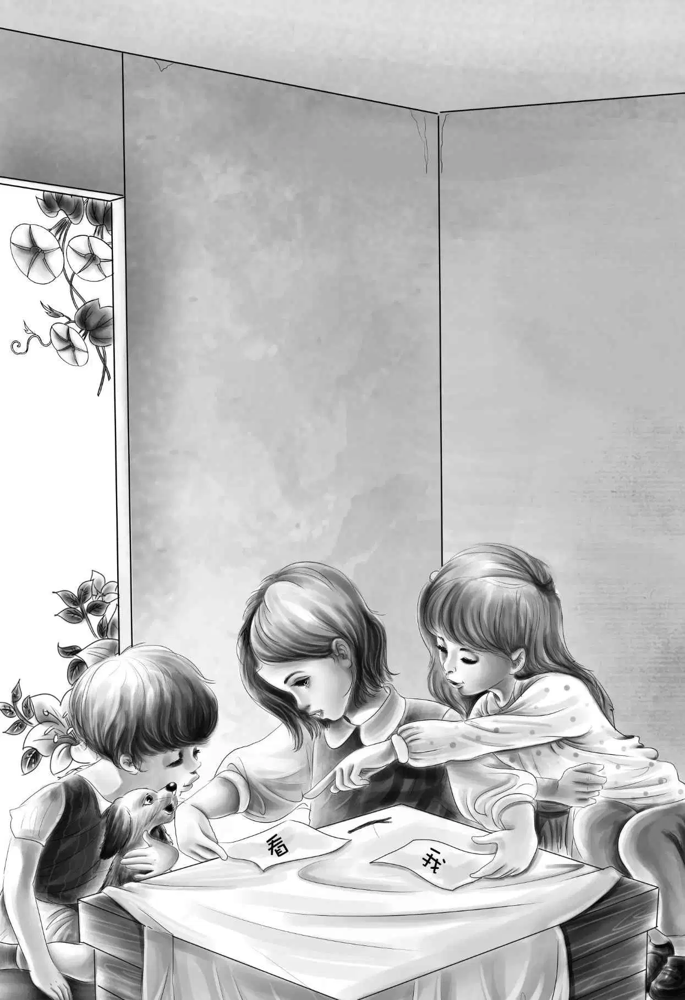
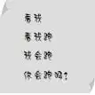

Henry and the Free-for-All
奥登先生是个大富翁，他在绿野镇和西沃城有好几个大磨坊。
奥登先生很喜欢男孩子，喜欢看到他们活力四射地奔跑、跳跃和玩耍的样子。每年，他都要联合另外三位富翁，在西沃城举办一整天的田径比赛。为了庆祝比赛，那天他的所有磨坊都会停工。
不管男女老少，高矮胖瘦，都可以参加比赛，男孩子们甚至每年还要专门为参赛做特训。
无论是赛跑、游泳还是跳高，每个项目都设了丰厚的奖品。
不过最受欢迎的项目还是被称作“自由赛”的赛跑，因为它的参赛要求不高，而且冠军还会获得由奥登先生亲手颁发的25美元和一个银质奖杯。这个项目的冠军不论是男孩或女孩都获得过，上一届则被一个大胖子夺了魁。
田径比赛日那天，亨利正在摩尔医生的院子里锄草，医生将车停到街上，把亨利叫了出来。
“快上车吧！”他对亨利说，“今天是田径比赛日，我想带你去看看比赛。”
亨利上车后，医生发动了引擎。
“很遗憾我自己没法儿去，”摩尔医生说，“不过我想了解比赛的情况。你去吧，回来告诉我冠军是谁。”
就这样，亨利坐到了赛场的露天看台上，紧接着，一个小男孩也爬上了看台，坐到他的身边。这时，有人大声喊道：“自由赛要开始了，选手们快做准备！”
“自由赛是什么？”亨利问。
“你连这个都不知道？”小男孩惊讶地问，“去年的比赛你没看吗？”
“没有。”亨利老实地回答道。
男孩笑了：“去年的自由赛有趣得很，除了帅哥美女外，还有两个大胖子参加。看到那边的男孩了吗？他可是去年的冠军，你应该见过他啊！他跑起来可快啦，快得你都看不到他的腿！”
亨利打量着去年的获胜者，他看起来比自己年龄大，不过个子却小得多。突然，亨利站了起来，悄悄地离开露天看台，径直向男选手休息室走去。
“你想参加自由赛吗？”一个男人问。
“是的，我想参加。”亨利答道。
于是，那人给了他一件比赛服，让他换上。
“你在哪儿参加的特训？”男人又问。
“我从没参加过特训。”亨利答道。
“可这些选手们整年都在训练啊！”那人强调道。
“反正我也没打算要赢他们。”亨利说，“我只是喜欢跑步罢了，跑起来乐趣多多，对吧？”
“是这样的，”那人连声赞同道，“是这样的！”
亨利巴望着尽快开赛，他真想痛快淋漓地跑上一场。在焦急的期盼中，参赛选手终于可以检录了，这意味着比赛马上就要开始了。亨利抽到了4号。
亨利暗自筹划着：“赛程这么长，刚开始我得节省体力才行。”
比赛的铃声响了，选手们犹如离弦的箭，沿着赛道狂奔，眨眼的工夫，亨利就被远远地甩到了后面，不过他一点都不着急。
“反正只是图个乐子。”亨利只想轻松地跑完全程。
不过很快，他的想法又变了：“反正我已经试过能跑得多轻松了，下面我要看看自己究竟能跑多快。”
接下来，所有人都开始领教亨利的速度了。只见他越跑越快，很快就超过了前面的两个女孩子。然后，他又超过一个胖子和一个小男孩。
比赛的刺激之处就在这里，观众们开始大声狂呼起来：“4号！4号！”
“再快点儿，再快点儿！”亨利催促着自己，“我还能跑得更快。”
他果然做到了，先是超过了25号和6号，紧接着又超过了5号和10号。现在只有16号在他前面了。此时此刻，亨利的目标已经变成了赢得这场比赛。他知道，25美元奖金对弟弟妹妹们来说，有多么重要。
“我一定要赢！”他为自己鼓着劲，“我要超过16号。”
他的步子迈得更快了，终点线已经近在咫尺。
“4号！4号！”观众们欢呼起来，“他要赢啦！”
亨利和16号咬得很紧，他低下头，拼尽全力冲刺，终于领先16号一步，越过了终点线！亨利胜利了！
欢呼声犹如潮水般袭来，几个人高高举起亨利，将他抬到领奖台上奥登先生的面前。
这时，一个声音猛然问道：“孩子，你叫什么名字？”
亨利有点不知所措，他不想将名字说出来，于是回答道：“亨利·詹姆斯。”这的确是他的名字，但并不是全名，他省掉了他的姓——“奥登”。
很快，运动场的大标志牌上就登出了几个大字：

“亨利·詹姆斯，这是你的奖品，”奥登先生说，“你跑得真快，孩子，我喜欢看你跑步。”
他递给亨利一个银质奖杯和25美元的奖金，并跟亨利握了握手。
在这个当儿，摩尔医生竟然也来到了赛场并爬上了看台，只是亨利没有发现而已。看到亨利和奥登先生正在握手，医生兀自微笑了起来。
颁奖仪式结束后，亨利离开了热闹的赛场，揣着25美元奖金，向摩尔医生家走去。
摩尔医生回到家时，看到亨利正在割草，他不禁又暗自微笑了。
亨利开口道：“我也刚刚回来呢！我马上告诉您那些比赛的冠军是谁。”
摩尔医生没有对亨利说自己也去了露天看台，而是等着亨利告诉他比赛的情况。
“谁赢了自由赛？”他问。
“是我！”亨利答道。
“是吗？”摩尔医生大声赞叹道，“你真是太棒啦！那么，你准备怎么花那笔奖金呢？”
“我打算把钱交给杰西。”亨利回答。
“真不错！”医生又赞道。
当亨利带着25美元回到棚车时，午饭已经准备好了。杰西将剩下的蔬菜一锅炖了，还在上面放了些黄油。大家本来已经饥肠辘辘，正准备开吃，可一听到亨利讲起比赛的事儿，还将银奖杯拿出来展示时，他们激动得连饭都顾不上吃了。
“你赢了比赛，亨利？”杰西兴奋地叫道，“噢，太让人高兴啦！”
“你本来跑得就很快，亨利，我就知道你能得冠军。”班尼欣赏着银奖杯。
“我跟他们说我叫亨利·詹姆斯。”亨利说。
“这么说没错，”杰西说，“这是你的真名儿。”
“我们发财了，是吧？”班尼激动地问。
“还算不上发财。”亨利笑着说，“对了，我买了些晚餐吃的菜。”
杰西向包里看去，只见里面有几个饱满的土豆。
“我会做土豆料理！”杰西开心地喊道，“美味得很呐，你们就等着吧！”
“我可等不了。”亨利笑着说，因为他要回去接着干活儿了。
吃过午饭后，班尼在棚车旁追着小狗嬉戏。
杰西将洗碗布挂到晾衣绳上，对他说：“班尼，你该学学读书认字啦。”
“不要，”班尼皱起了眉头，“这里又没有学校。”
杰西笑了起来：“你是没法儿上学，但是我可以教你。要是我们有课本就好了。”
“课本咱们可以做！”维莉说，“包食物的纸我都留着呢！”
“纸是有了，”杰西回应道，“可是我们拿什么来写字呢？”
“可以用火烧过的棍子呀！”维莉说。
于是，杰西拿出一根长棍子伸到火里面烧焦，然后用烧黑的一头开始写字。
“看到班尼会认字，亨利肯定要高兴坏了吧！”维莉大声说。
不过班尼一点也不想学认字，他只喜欢看两个姐姐做课本。杰西在课本上写了“看”和“我”两个字，她把这两个字教给班尼，可班尼却始终分不清它们。
“这么跟你讲吧，班尼，”杰西又解释道，“‘看’里有个目，目就是眼睛的意思。”
可班尼还是没有听懂。
“这也太难了！”班尼嘟囔道。
“我来试试吧，杰西！”维莉忍不住说，“我们在一张纸上写上‘我’，另一张纸上写‘看’，再让班尼指出哪张纸上是‘我’——学校里都是这样教的。”

她们写好后，叫来班尼，杰西又让他仔细观察了“看”的构成后，才将两个字放到地上，让他辨认。
“来，班尼，指出哪个字是‘看’。”杰西说。
班尼看着这两个字，仍是一副懵懂的表情。
望望突然叫了起来，把爪子放到了“看”上面。
现在，就算望望认不出另一个字，班尼也觉得它会认了。班尼会让一只小狗超过自己吗？当然不会！他集中注意力，飞快地记住了这两个字。
“多亏了小望望！”杰西不由赞道。
“认字一点儿也不难，”班尼说，“是不是，望望？”
就这样，晚饭之前，班尼已经学会了很多字：

“真是好宝宝！”杰西夸奖道，“今天就学到这儿吧，我得去准备做晚饭了。”
孩子们生起了火，在小溪里洗干净土豆。接着，杰西用湿纸包起土豆，放到热石头下面的火堆里。
“杰西，你想把土豆烧掉吗？”班尼惊讶地问。
“当然不是，班尼，”杰西回答道，“你就等着瞧吧！”
亨利回到家时，看到杰西正从火堆里拨弄出几个黑不溜秋的土豆。
“土豆烧糊了吗？”亨利问道。
“没糊，”杰西说，“不信你们自己看看！”说着她递给每人三个黑乎乎的烤土豆。
“好烫，”维莉提醒道，“吃的时候要小心！”
“大家先掰开土豆，”杰西说，“再用勺子挖出土豆泥，放上黄油，最后撒点儿盐。我来帮班尼……味道怎么样？”
“哇噢！”班尼喊道，“太好吃啦！”
“我没说错吧？”杰西说，“来，再喝点牛奶！”
“牛奶和土豆，多好的晚餐啊！”亨利感叹道。
“我会认字啦！”班尼边吃边一字一顿地说。
“什么？”亨利惊呼道。
“是的，小班尼会认字了。”维莉说，“今天下午刚学会的。快把你的课本拿过来，班尼。”
班尼现在已经喜欢上读书了。“一点儿都不难，”他说，“望望也会读书呢！”
“噢，是吗？”亨利笑了，“让它读给我们听听吧！”
“望望太累了，”班尼说，“还是我来吧。”
班尼有板有眼地读起了他的新书。
“好样的，乖班尼！”亨利说，“学了这么多，一定累坏了吧？快上床休息吧，我也累了！”